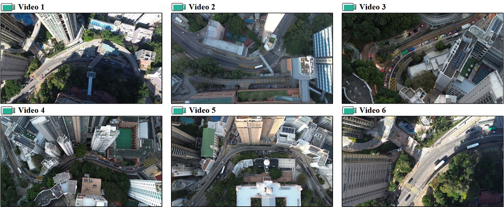
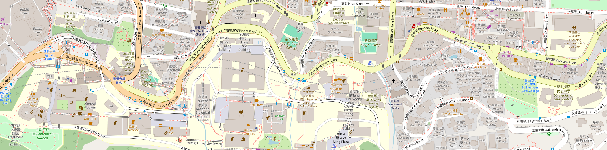

Video S1 — Following-1
Geometry-constrained following clip 1.
This page provides supplementary UAV clips used to evaluate cooperative visibility gain in cooperative autonomous driving systems, together with approval documents and the supplementary PDF. Videos are organized into five scenario categories: geometry-constrained following, heavy-vehicle-induced occlusions, ramp entry and merging, signal start-up and queueing, and bus-stop interactions.
Curves/grades induce persistent occlusions; cooperation recovers newly visible regions and extends occlusion-constrained visibility.
Geometry-constrained following clip 1.
Geometry-constrained following clip 2.
Geometry-constrained following clip 3.
Geometry-constrained following clip 4.
Large vehicles (e.g., trucks) block line-of-sight; cooperative viewpoints enable occlusion lift and earlier awareness.
Heavy-vehicle occlusion clip 1.
Heavy-vehicle occlusion clip 2.
Heavy-vehicle occlusion clip 3.
Heavy-vehicle occlusion clip 4.
Heavy-vehicle occlusion clip 5.
Heavy-vehicle occlusion clip 6.
On-ramp entry and merging conflicts benefit from cooperative visibility union (V2V/V2I) over the conflict zone.
Ramp entry & merging clip 1.
Ramp entry & merging clip 2.
Ramp entry & merging clip 3.
Ramp entry & merging clip 4.
Stop-and-go traffic near signalized intersections; cooperation improves observability of queue tails and restart dynamics.
Signal start-up & queueing clip 1.
Signal start-up & queueing clip 2.
Signal start-up & queueing clip 3.
Signal start-up & queueing clip 4.
Curbside interaction zones involving bus stopping, spillback queues, and lane changes; cooperation enhances curbside visibility.
Bus-stop interaction clip 1.
Bus-stop interaction clip 2.
Bus-stop interaction clip 3.
Bus-stop interaction clip 4.


Download the full supplementary PDF: Supplementary.pdf
The full-resolution UAV video clips (4K) will be released after publication. You may access the repository via the following Google Drive link: Google Drive (Full Videos, available after publication) .